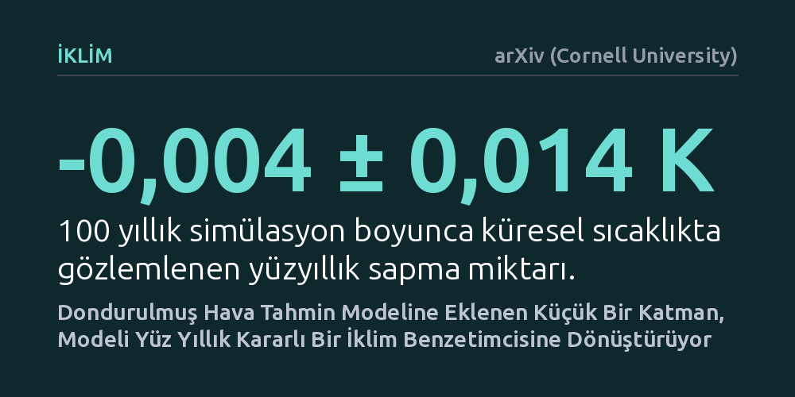

IKLIM · arXiv (Cornell University) · 2026-10-20
Mevcut yapay zekâ hava tahmin modellerinin uzun vadede sapmadan yüz yıllık iklim simülasyonları yapıp yapamayacağı araştırıldı. Geliştirilen 400 bin parametrelik hafif bir eklenti, dondurulmuş bir hava modelini yüz yıl boyunca neredeyse sıfır sıcaklık kaymasıyla kararlı bir iklim benzetimcisine dönüştürdü.
Aylar süren pahalı eğitimlerle yeni iklim modelleri kurmak yerine, mevcut kısa vadeli hava modellerini küçük bir eklentiyle asırlık iklim projeksiyonlarında kullanmanın mümkün olduğunu gösteriyor.

Yapay zekâ tabanlı hava durumu modelleri son yıllarda meteorolojide belirgin bir ilerleme sağladı. Orta vadeli, yani birkaç günlük tahminlerde geleneksel fizik temelli sayısal hava modelleriyle başa baş yarışıyor, hatta bazı durumlarda onları geride bırakıyorlar. Ancak bu modelleri bir haftalık tahmin penceresinin ötesine geçirip yıllar sürecek simülasyonlar için serbest çalıştırdığınızda ciddi sorunlar ortaya çıkıyor.
Serbest bırakılan modeller zamanla gerçek dünyadaki fiziksel dengelerden kopuyor; ya aşırı uç değerlere savrularak çöküyor ya sıcaklık ortalamalarında 'iklim kayması' adı verilen sistematik sapmalar gösteriyor ya da atmosferin doğal değişkenliğini tamamen yitirip durağanlaşıyor. İklim araştırmaları için sıfırdan yapay zekâ modelleri eğitmek ise devasa süper bilgisayar kaynakları ve aylar süren eğitim maliyetleri gerektiriyor. Bu durum, günlük hava tahmininde yüksek başarı gösteren modellerin iklim araştırmalarında doğrudan kullanılamamasına yol açıyordu.
Minjong Cheon tarafından geliştirilen Rescene adlı yöntem, mevcut hava modelinin iç yapısını veya ağırlıklarını değiştirmek yerine onun etrafına hafif bir yazılımsal katman ekliyor. Çalışmada 1,5 derece mekânsal çözünürlüğe sahip, 6 saatlik adımlarla 69 farklı atmosferik değişkeni hesaplayan ve ağırlıkları dondurulmuş bir hava modeli temel alındı. Rescene, bu büyük modele yalnızca 400 bin parametrelik minik bir sarmalayıcı ekleyerek süreci yönetiyor.
Yöntemin temelinde iki mekanizma bulunuyor. İlk olarak, 'yavaş saat' adı verilen deterministik bir bileşen, dondurulmuş modeli takvim iklimine çıpalayarak uzun vadede dengeden uzaklaşmasını engelliyor. İkinci olarak, bu çıpalama işleminin törpülediği günlük hava dalgalanmalarını sisteme geri kazandırmak için kontrollü bir rastlantısal pertürbasyon (dalgalanma) veriliyor. Bu dalgalanmanın frekans dağılımı gerçek atmosferik anomali tayfına göre ayarlanarak havanın doğal dinamizmi korunuyor.
Sistem, 8 farklı başlangıç koşuluyla başlatılan 100 yıllık simülasyonlarla sınandı. Bulgular, modelin yüz yıl boyunca neredeyse hiçbir iklim sapması sergilemediğini ortaya koydu; yüz yıllık küresel sıcaklık kayması eksi 0,004 derece seviyesinde kalarak istatistiksel açıdan sıfırdan farksız çıktı. Ayrıca 2022 test yılında yürütülen 16 üyeli topluluk denemelerinde basınç, sıcaklık ve geopotansiyel yükseklik gibi temel değişkenlerde modelin tahmin yayılımı ile hatası dengeli bir kalibrasyon sergiledi.
Daha da dikkat çekici olanı, serbest çalışan simülasyonun günlük hava değişkenliğinin coğrafi dağılımını yüzde 83 benzerlikle yakalaması oldu. Rastlantısal dalgalanma katmanı eklenmeyen yalın deterministik yapı atmosferik blokaj olaylarını hiç üretemezken, Rescene gözlemlenen atmosferik blokaj sıklığının yüzde 71'ini yeniden üretmeyi başardı. Bu sonuç, yöntemin yalnızca ortalama sıcaklıkları değil, karmaşık hava olaylarının gerçekleşme sıklığını da makul oranda yakaladığını gösteriyor.
Rescene, iklim modellemesinde karşılaşılan yüksek eğitim maliyeti sorununa pratik bir alternatif sunuyor. Kısa vadeli hava tahmini amacıyla daha önce eğitilmiş modellerin, ihmal edilebilir bir ek hesaplama yüküyle yüzyıllık iklim projeksiyonları ve topluluk simülasyonları için değerlendirilebileceğini kanıtlıyor. Bu yaklaşım, yüksek işlem gücüne erişimi sınırlı olan araştırma gruplarının da uzun vadeli iklim dinamiklerini incelemesine kapı aralayabilir.
Bununla birlikte bulguları temkinli değerlendirmek gerekiyor. Çalışma henüz tek bir temel model üzerinde ve sınırlı sayıda simülasyonla test edilmiş bir önbaskı niteliğinde. Blokaj sıklığında kalan yüzde 29'luk açık, modelin aşırı hava olaylarının tamamını kusursuz yakalayamadığını gösteriyor. Yöntemin farklı sera gazı senaryolarında, iklim değişikliği projeksiyonlarında ve başka hava modellerinde ne kadar kararlı kalacağı bağımsız çalışmalarla doğrulanmaya muhtaç.